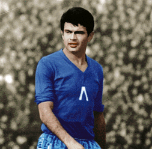

Патрон
За поколения българи Васил Левски е Апостола на свободата. Той е идеолог и организатор на българската национална революция. Роден е като Васил Иванов Кунчев на 18 юли 1837 г. в Карлово, но в историята ще остане като Левски. Съвременниците го описват като буден и красив младеж, роден лидер. Животът му минава през много перипетии, а за подвизите му още приживе се разказват легенди.
Георги Аспарухов - Гунди
Великият Гунди - Георги Аспарухов, е роден на 4 май 1943 г. в софийския квартал "Редута". Играе в детския, а след това и в юношеския отбор на Левски. Печели шампионската титла с юношите през 1960 и 1961 г.
Обявен е за най-великия български футболист на XX век. Позицията му на терена винаги е била централен нападател. Той е заслужил титлата "майстор на спорта" и е носител на сребърен "Народен орден на труда" през 1965 г. За човешките качества на великата деветка се носят легенди, футболните няма кой да ги оспори - стига само черно-белият запис на уникалния гол на митичния "Уембли". Милан неистово го иска, лично легендарният треньор на "росонерите" Нерио Роко е готов да му помогне да емигрира, ако приеме умопомрачителната за онова време оферта на италианския гранд. Милан вижда в лицето на Аспарухов перфектния таран, който бележи еднакво добре с двата крака и с глава. Гунди обаче отказва да емигрира.